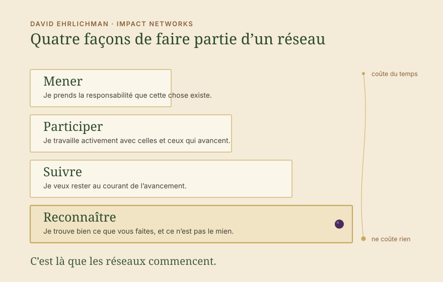
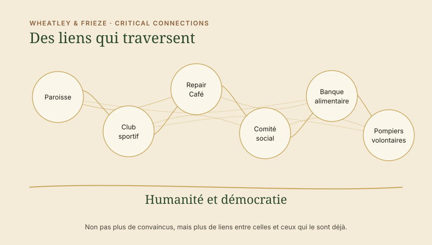

Impulsion · Penser la société comme un réseau : la démocratie et l’humanité ne vont plus de soi
Les élections en Saxe-Anhalt ont montré à quel point nous sommes près de la catastrophe. Aussi effrayant que soit le résultat, il faut se réjouir que l’AfD soit passée une fois encore à côté de la majorité absolue. Nous avons gagné un peu de temps, et nous devrions l’utiliser. Pour nous, l’utiliser veut dire former un nous qui dépasse les sujets pris un à un, afin de renforcer de nouveau la base. Cette base, nous l’avons depuis longtemps, nous ne la voyons simplement plus. Et le travail en réseau sur cette base commence bien plus tôt que nous ne le pensons.

La base
Ce que nous partageons sans le voir
La base est une certaine forme d’humanité, c’est-à-dire la dignité de la personne, et avec elle les droits fondamentaux démocratiques. L’humanité et la démocratie, et cela devrait suffire pour penser en réseaux.
Celui qui remplit cela fait quelque chose de bien. La banque alimentaire avec sa table de midi, le groupe local de gauche avec son repair café, le club sportif, le comité social ou encore la paroisse. La liste est longue.
Et bien que nous y souscrivions sans doute largement, nous ne voyons plus quelle est la base et nous oublions que nous trouvons cela bien. Selon notre propre point de vue, nous critiquons la religion, l’activité économique de l’entreprise, le club sportif ou le fait que les personnes sans abri ne travaillent pas. Ce que nous ne voyons presque plus, parce que ce fut longtemps la base de la société et donc une évidence, c’est que nous pourrions bien plus souvent reconnaître et apprécier ce que les gens font et veulent, sans avoir à être d’accord avec tout.
Au lieu de reconnaître l’intention et le travail, nous critiquons. Tu t’engages justement à l’église. Tu es à gauche dans le groupe local. Le sport ne change rien. Pourquoi t’occuper des apprentis si de toute façon tout part à vau-l’eau dans l’entreprise. Cela arrive surtout là où les gens ne se rencontrent pas autour d’un sujet commun, mais dans la famille ou dans des cercles plus lâches. C’est là que manque le soutien solidaire pour ce que fait l’autre.
Nous devrions tous comprendre que les évidences dont nous avons pu profiter ici pendant 75 ans ne resteront pas garanties, et que les préserver est désormais un travail. Si nous voulons que la démocratie et l’humanité fassent partie de notre système social, alors nous devrions aussi apprendre à exprimer la tolérance, la reconnaissance et l’estime. Je n’ai pas à vouloir ce que fait l’autre. Je dois reconnaître qu’il le pense bien et qu’il respecte la démocratie. La différence, nous n’avons ni à la trancher ni à la dissoudre. Elle peut rester, et elle est au fond ce sur quoi repose notre démocratie : la liberté.


Ce à quoi nous faisons face
Le raccourci autoritaire par la peur et l’appartenance
L’extrême droite grandit à une vitesse effrayante, et cela tient en partie à ses structures autoritaires. Les personnes qui s’y laissent emporter une fois sur le plan émotionnel, le plus souvent par la peur, cèdent d’un coup une grande part de cette liberté et font confiance aux personnes. Ce que ces personnes disent ensuite passe vite pour une opinion propre, et de l’extérieur cela paraît soudé. Un sentiment d’appartenance naît rapidement, mais chez la plupart il repose encore, je l’espère, sur une perception fausse et non sur une opinion personnelle. Or, si l’appartenance n’est pas une option du côté démocratique, comment voulons-nous inverser la tendance ? Y a-t-il une alternative ?
Ce que nous devrions y opposer est fait de beaucoup de personnes qui décident elles-mêmes et se soutiennent. Cela prend plus de temps et c’est du travail, et cela tient davantage, parce que cela ne dépend d’aucune personne en particulier. Pour que ce soit là au moment où on en a besoin, nous devons façonner les liens activement. Et ce sentiment d’appartenance, nous devrions aussi le créer, sur une base solide. Sur la base de la démocratie et de l’humanité, nous en faisons partie. Nous sommes la société.
Quatre façons de participer
Le travail en réseau commence par la reconnaissance
Dans Impact Networks, David Ehrlichman décrit comment naissent les réseaux qui veulent faire bouger quelque chose dans la société. L’une de ses observations est qu’il existe différents niveaux dans les réseaux. Les personnes y participent de quatre façons différentes, et un réseau vit du fait que les quatre comptent.
Mener. Je prends la responsabilité que cette chose existe.
Participer. Je travaille activement avec celles et ceux qui avancent.
Suivre. Je veux rester au courant de l’avancement.
Reconnaître. Je trouve bien ce que vous faites, et ce n’est pas le mien.

Il s’agit ici de la reconnaissance. Les deux premières coûtent du temps, et presque personne n’a du temps pour plus d’une ou deux causes. La troisième a elle aussi sa limite, car personne ne peut se tenir informé de tout et s’abonner à toutes les lettres d’information.
La quatrième est celle que nous négligeons. Elle ne coûte ni temps, ni argent, ni adhésion, et elle est le début de tout le reste. Ce qui tient sa place aujourd’hui, c’est la critique venue des niveaux au-dessus. Qui met quelque chose sur pied s’entend dire pourquoi c’est la mauvaise chose ou pourquoi c’est trop peu. Cela ôte l’envie, et c’est pourquoi beaucoup arrêtent alors qu’ils auraient continué. La reconnaissance les maintient dans le travail, et c’est le renforcement dont nous avons besoin. Super que tu t’engages pour ta cause ! C’est là que naît le réseau que nous appelons société, qui a si longtemps été une évidence et ne l’est malheureusement plus. C’est là que commence le renforcement de la société civile. Cela, aujourd’hui, c’est de l’antifascisme.
En pratique
À quoi cela ressemble au quotidien
En tant qu’électrice conservatrice, écrire au repair café du groupe local de gauche que c’est bien, tout ce qui s’y répare. En tant qu’homme de gauche, dire à l’oncle du club de boxe combien c’est fort qu’il s’occupe des jeunes. En tant que cheffe, dire au président du comité social que c’est bien qu’il s’engage, aussi éprouvant que ce soit en ce moment pour tout le monde.
En tant que personne que l’église ne touche pas, dire à la paroisse que sa table de midi nourrit des gens chaque semaine. En tant que militante du climat, dire à la société de tir qu’elle rassemble au village plus de monde que n’importe quel autre événement. En tant que citadin, dire aux pompiers volontaires de la campagne que c’est bien que quelqu’un sorte la nuit. En tant qu’entrepreneur, dire à la banque alimentaire que c’est bien qu’elle existe.
Un court courriel suffit, un bref « super » dans la conversation à table. Je trouve bien ce que vous faites, continuez. Celui qui le reçoit repart autrement le lendemain, et celui qui l’écrit a un lien qui n’existait pas avant.
Cela vaut aussi là où quelqu’un choisit des moyens que je ne choisirais pas moi-même. Les actions non violentes qui vont jusqu’à la limite de la loi ont une cause derrière elles, et cette cause, je peux la comprendre sans soutenir l’action. Exprimer la reconnaissance pour l’engagement, précisément quand l’action est critiquée, fait une différence importante pour le renforcement de la société.
Préserver la société
Des liens à travers tout le spectre démocratique

En 2007, Meg Wheatley et Deborah Frieze ont écrit pour le Berkana Institute une phrase qui nous aide ici : plutôt que de nous soucier d’une masse critique, notre travail consiste à favoriser des liens critiques. Il ne s’agit donc pas du nombre de convaincus, mais des liens entre celles et ceux qui veulent préserver le noyau démocratique.
Ces liens, il nous les faut aujourd’hui à travers tout le spectre démocratique, de la gauche jusqu’aux chrétiens-démocrates. Ils naissent plus facilement dans la société civile qu’entre les partis. Des partis, il y a pour le moment peu à attendre, parce que la polarisation passe depuis longtemps entre eux. Quand les liens sont là en bas, davantage devient possible en haut. Un parti chrétien-démocrate en Saxe-Anhalt peut alors dire qu’il gouvernera les quatre prochaines années avec les autres partis démocratiques et regardera ce qui peut être mis en mouvement ensemble.
C’est de cela qu’il s’agit quand nous parlons de préserver la société. La polarisation à l’intérieur du spectre démocratique est ce qui nous nuit en ce moment, et elle pousse les gens vers la droite. La reconnaissance et l’estime pour une action démocratique et humaine, possible en tant d’endroits, lui retirent le terrain.
Renforcer réellement la société civile dans toute son étendue, sur la base de l’humanité et de la démocratie, préserve la société telle que nous la connaissons. C’est ce que nous pouvons tous faire. Bien sûr, il y a du travail au-delà pour empêcher des majorités d’extrême droite, mais cela devrait être la base à laquelle nous travaillons tous ensemble. Si ce n’est maintenant, quand ?
Exprimons tous davantage de reconnaissance et d’estime, et faisons-le là où cela nous coûte, là où les liens sont critiques, et là où nous devrions nous avouer : c’est démocratique, il y a derrière une cause qui veut du bien aux gens. Continuez, c’est ce dont nous avons besoin.
→ Systems Change → Coopérez avec nous
Sources
- Ehrlichman, D.: Impact Networks. Create Connection, Spark Collaboration, and Catalyze Systemic Change. Berrett-Koehler, Oakland 2021.
- Wheatley, M.; Frieze, D.: Using Emergence to Take Social Innovations to Scale. The Berkana Institute, in: Fieldnotes, Winter 2007.